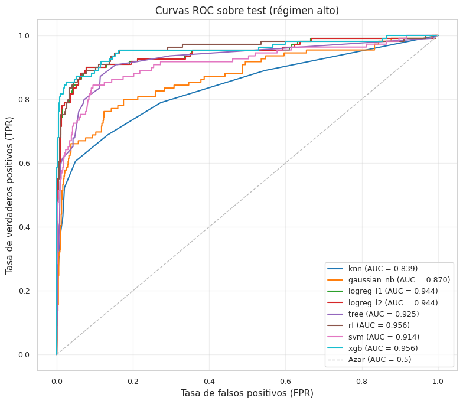
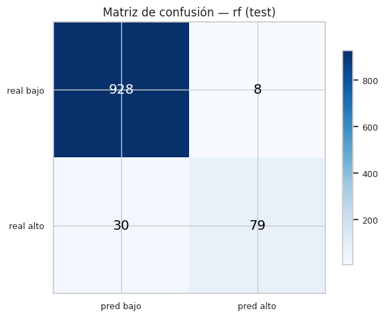
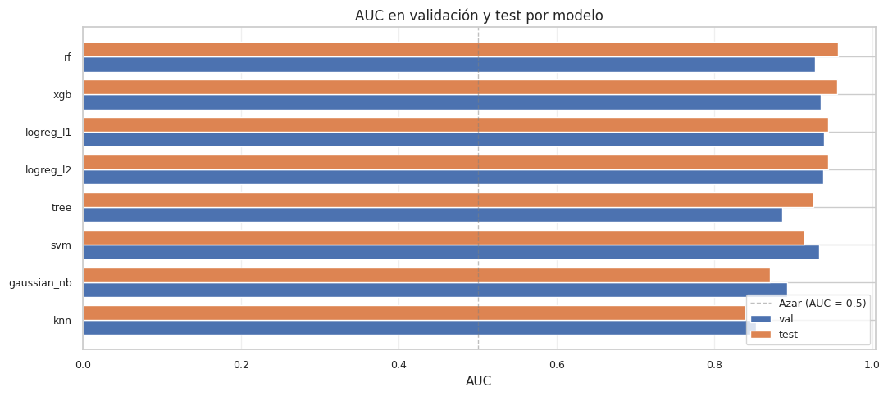

6. Modelos base de clasificación#
Este capítulo entrena los ocho modelos base de clasificación
considerados en el proyecto sobre target_regime, la variable binaria
que indica si la volatilidad del día siguiente estará por encima o
por debajo de la mediana histórica del conjunto de entrenamiento:
K-Nearest Neighbors Classifier
Gaussian Naive Bayes
Logistic Regression con regularización \(L_1\)
Logistic Regression con regularización \(L_2\)
Decision Tree Classifier
Random Forest Classifier [Breiman, 2001]
Support Vector Machine (SVC con kernel RBF)
XGBoost Classifier [Chen and Guestrin, 2016] (
hist+ early stopping)
6.1 Contexto: el test está desbalanceado#
El umbral del régimen se calcula como la mediana de target_vol
en train (período 1990-2009, que incluye crisis dotcom y 2008).
Cuando se aplica ese mismo umbral a períodos posteriores
(validation 2009-2013 post-crisis; test 2013-2017 Gran Calma), la
mayoría del target en val/test queda como «régimen bajo»:
Conjunto |
Período |
% régimen bajo |
% régimen alto |
|---|---|---|---|
train |
1990 - 2009 |
50% |
50% |
val |
2009 - 2013 |
87% |
13% |
test |
2013 - 2017 |
90% |
10% |
Este distribution shift es real, no un bug: refleja que la volatilidad post-2008 fue históricamente baja. Tiene dos consecuencias para este capítulo:
Accuracy es engañosa. Un clasificador que prediga siempre «régimen bajo» obtiene ~90% de accuracy en test sin haber aprendido nada. No la usaremos como métrica principal.
AUC es robusto al desbalance porque integra el desempeño en todos los umbrales posibles. Es nuestra métrica principal.
El proyecto considera que justifiquemos explícitamente la elección de métrica principal. AUC porque (a) es robusta al desbalance, (b) es la métrica natural para evaluar la calidad del score probabilístico, (c) es la métrica que utiliza el test de DeLong [DeLong et al., 1988] que aplicaremos en el Capítulo 11.
Como métrica secundaria reportamos F1 sobre la clase positiva (régimen alto, la clase minoritaria del test) porque para un operador financiero el costo asimétrico es claro: confundir alta volatilidad con calma es más caro que lo opuesto.
6.2 Filosofía metodológica#
Igual que en el Capítulo 5:
Pipeline obligatorio. Imputación mediana + escalado estándar + modelo. El preprocesamiento se ajusta solo con train y se aplica a val/test.
Hiperparámetros baseline. Defaults razonables, sin optimizar. La optimización sistemática es tarea del Capítulo 8.
Validation + test ambas reportadas. Para detectar overfitting y para visibilizar el shift.
XGBoost con
tree_method="hist"y early stopping. Como en el Capítulo 5, con el manejo manual del preprocesamiento.
El Capítulo 7 retoma estos modelos y los re-entrena con SMOTE,
ADASYN y class_weight='balanced' para evaluar si las técnicas de
balanceo modifican el ranking.
6.3 Setup y carga de datos#
import sys
from pathlib import Path
import time
import warnings
import json
import numpy as np
import pandas as pd
import matplotlib.pyplot as plt
from sklearn.pipeline import Pipeline
from sklearn.impute import SimpleImputer
from sklearn.preprocessing import StandardScaler
from sklearn.neighbors import KNeighborsClassifier
from sklearn.naive_bayes import GaussianNB
from sklearn.linear_model import LogisticRegression
from sklearn.tree import DecisionTreeClassifier
from sklearn.ensemble import RandomForestClassifier
from sklearn.svm import SVC
from sklearn.metrics import (
accuracy_score, precision_score, recall_score, f1_score,
roc_auc_score, confusion_matrix, roc_curve,
)
from xgboost import XGBClassifier
PROJECT_ROOT = Path.cwd().parent
sys.path.insert(0, str(PROJECT_ROOT))
from src.config import (
RANDOM_STATE, METRICS_DIR, PREDICTIONS_DIR, MODELS_DIR,
FIGURES_DIR, TABLES_DIR, ensure_dirs,
)
from src.viz import set_style, savefig
from src.io_utils import save_json, save_model
ensure_dirs()
set_style()
warnings.filterwarnings("ignore", category=UserWarning)
warnings.filterwarnings("ignore", category=FutureWarning)
np.random.seed(RANDOM_STATE)
# Cargar splits
tr = pd.read_parquet(PROJECT_ROOT / "data/processed/train.parquet")
va = pd.read_parquet(PROJECT_ROOT / "data/processed/val.parquet")
te = pd.read_parquet(PROJECT_ROOT / "data/processed/test.parquet")
with open(PROJECT_ROOT / "data/processed/metadata.json") as f:
meta = json.load(f)
feature_cols = meta["feature_columns"]
# Filtrar filas sin target (las últimas de cada split por el shift)
def split_xy(df, cols):
mask = df["target_regime"].notna()
return (
df.loc[mask, cols].to_numpy(),
df.loc[mask, "target_regime"].astype(int).to_numpy(),
)
X_train, y_train = split_xy(tr, feature_cols)
X_val, y_val = split_xy(va, feature_cols)
X_test, y_test = split_xy(te, feature_cols)
print(f"Splits:")
print(f" train: {X_train.shape} | clases: {dict(zip(*np.unique(y_train, return_counts=True)))}")
print(f" val: {X_val.shape} | clases: {dict(zip(*np.unique(y_val, return_counts=True)))}")
print(f" test: {X_test.shape} | clases: {dict(zip(*np.unique(y_test, return_counts=True)))}")
print()
print(f"Tasa de positivos:")
print(f" train: {y_train.mean():.3f}")
print(f" val: {y_val.mean():.3f}")
print(f" test: {y_test.mean():.3f} <-- fuerte desbalance")
Splits:
train: (4873, 31) | clases: {np.int64(0): np.int64(2434), np.int64(1): np.int64(2439)}
val: (1044, 31) | clases: {np.int64(0): np.int64(904), np.int64(1): np.int64(140)}
test: (1045, 31) | clases: {np.int64(0): np.int64(936), np.int64(1): np.int64(109)}
Tasa de positivos:
train: 0.501
val: 0.134
test: 0.104 <-- fuerte desbalance
6.4 Función helper para evaluación uniforme#
Recibe un pipeline ya construido (o estimador), lo entrena con train, predice probabilidades y etiquetas en val y test, calcula las cinco métricas pedidas por la rúbrica en ambos conjuntos, persiste el modelo y devuelve un diccionario con todo lo necesario para construir la tabla final y las visualizaciones.
def _classifier_metrics(y_true, y_pred, y_proba):
return {
"accuracy": float(accuracy_score(y_true, y_pred)),
"precision": float(precision_score(y_true, y_pred, zero_division=0)),
"recall": float(recall_score(y_true, y_pred, zero_division=0)),
"f1": float(f1_score(y_true, y_pred, zero_division=0)),
"auc": float(roc_auc_score(y_true, y_proba)),
}
def evaluate_classifier(name, pipeline,
X_train, y_train, X_val, y_val, X_test, y_test):
# Entrena y evalua un clasificador binario en val y test.
t0 = time.time()
pipeline.fit(X_train, y_train)
fit_s = time.time() - t0
proba_val = pipeline.predict_proba(X_val)[:, 1]
proba_test = pipeline.predict_proba(X_test)[:, 1]
pred_val = pipeline.predict(X_val)
pred_test = pipeline.predict(X_test)
m_val = _classifier_metrics(y_val, pred_val, proba_val)
m_test = _classifier_metrics(y_test, pred_test, proba_test)
save_model(pipeline, MODELS_DIR / f"06_{name}.joblib")
print(f"{name:>10s} | "
f"val: AUC={m_val['auc']:.4f} F1={m_val['f1']:.4f} Rec={m_val['recall']:.4f} | "
f"test: AUC={m_test['auc']:.4f} F1={m_test['f1']:.4f} Rec={m_test['recall']:.4f} | "
f"fit={fit_s:.2f}s")
return {
"name": name,
**{f"{k}_val": v for k, v in m_val.items()},
**{f"{k}_test": v for k, v in m_test.items()},
"fit_s": fit_s,
"pred_val": pred_val, "pred_test": pred_test,
"proba_val": proba_val, "proba_test": proba_test,
}
results = {}
6.5 K-Nearest Neighbors y Naive Bayes#
KNN clasifica por mayoría entre los vecinos más cercanos en el espacio de features. Es un modelo no paramétrico que no asume estructura; es competitivo si la métrica de distancia es informativa, lo cual depende del escalado (que en nuestro pipeline está garantizado).
Naive Bayes Gaussiano asume que cada feature se distribuye normalmente condicionalmente en la clase y que las features son independientes dada la clase. La segunda suposición se viola flagrantemente en nuestro problema (todas las features derivan de la serie OHLCV y están correlacionadas), pero NB sigue siendo un benchmark razonable porque es muy rápido y, a veces, sorprendentemente competitivo.
results["knn"] = evaluate_classifier(
"knn",
Pipeline([
("imputer", SimpleImputer(strategy="median")),
("scaler", StandardScaler()),
("model", KNeighborsClassifier(n_neighbors=15, weights="uniform", n_jobs=-1)),
]),
X_train, y_train, X_val, y_val, X_test, y_test,
)
results["gaussian_nb"] = evaluate_classifier(
"gaussian_nb",
Pipeline([
("imputer", SimpleImputer(strategy="median")),
("scaler", StandardScaler()),
("model", GaussianNB()),
]),
X_train, y_train, X_val, y_val, X_test, y_test,
)
knn | val: AUC=0.8527 F1=0.3729 Rec=0.2357 | test: AUC=0.8393 F1=0.4384 Rec=0.2936 | fit=0.04s
gaussian_nb | val: AUC=0.8917 F1=0.4022 Rec=0.2643 | test: AUC=0.8703 F1=0.5455 Rec=0.4128 | fit=0.01s
6.6 Logistic Regression con regularización \(L_1\) y \(L_2\)#
Regresión logística es el modelo lineal canónico para clasificación binaria: estima \(P(\text{regime}=1 \mid x)\) como \(\sigma(\beta^T x)\).
L1 (Lasso logístico) penaliza la suma de valores absolutos de los coeficientes. Induce esparsidad: algunos coeficientes son exactamente cero. Útil para detectar qué features son relevantes para el régimen.
L2 (Ridge logístico) penaliza la suma de cuadrados de coeficientes. Sin esparsidad, pero más estable frente a multicolinealidad.
Ambos usan el solver saga, que soporta L1 y L2 y escala bien con el
tamaño del dataset.
results["logreg_l1"] = evaluate_classifier(
"logreg_l1",
Pipeline([
("imputer", SimpleImputer(strategy="median")),
("scaler", StandardScaler()),
("model", LogisticRegression(
penalty="l1", solver="saga", C=1.0,
max_iter=5000, random_state=RANDOM_STATE,
)),
]),
X_train, y_train, X_val, y_val, X_test, y_test,
)
results["logreg_l2"] = evaluate_classifier(
"logreg_l2",
Pipeline([
("imputer", SimpleImputer(strategy="median")),
("scaler", StandardScaler()),
("model", LogisticRegression(
penalty="l2", solver="saga", C=1.0,
max_iter=5000, random_state=RANDOM_STATE,
)),
]),
X_train, y_train, X_val, y_val, X_test, y_test,
)
logreg_l1 | val: AUC=0.9386 F1=0.6885 Rec=0.6000 | test: AUC=0.9443 F1=0.7708 Rec=0.6789 | fit=0.24s
logreg_l2 | val: AUC=0.9380 F1=0.6829 Rec=0.6000 | test: AUC=0.9442 F1=0.7708 Rec=0.6789 | fit=0.34s
6.7 Decision Tree y Random Forest#
Análogos a los del Capítulo 5 pero con criterion="gini" para
clasificación. La hipótesis es que la frontera entre régimen bajo y
régimen alto puede capturarse mejor con particiones rectangulares
del espacio de features que con un hiperplano lineal.
results["tree"] = evaluate_classifier(
"tree",
Pipeline([
("imputer", SimpleImputer(strategy="median")),
("scaler", StandardScaler()),
("model", DecisionTreeClassifier(
max_depth=8, min_samples_leaf=10, random_state=RANDOM_STATE,
)),
]),
X_train, y_train, X_val, y_val, X_test, y_test,
)
results["rf"] = evaluate_classifier(
"rf",
Pipeline([
("imputer", SimpleImputer(strategy="median")),
("scaler", StandardScaler()),
("model", RandomForestClassifier(
n_estimators=200, max_depth=10, min_samples_leaf=5,
max_features="sqrt", random_state=RANDOM_STATE, n_jobs=-1,
)),
]),
X_train, y_train, X_val, y_val, X_test, y_test,
)
tree | val: AUC=0.8859 F1=0.6058 Rec=0.5929 | test: AUC=0.9251 F1=0.7053 Rec=0.6147 | fit=0.12s
rf | val: AUC=0.9271 F1=0.7008 Rec=0.6357 | test: AUC=0.9559 F1=0.8061 Rec=0.7248 | fit=2.92s
6.8 Support Vector Machine (RBF)#
SVM con kernel RBF: encuentra el hiperplano que maximiza el margen
entre clases en un espacio implícito de mayor dimensión. Requiere
probability=True para que predict_proba esté disponible (necesario
para AUC); esto usa Platt scaling internamente y duplica el costo de
entrenamiento.
Como en el Capítulo 5, SVM puede ser sensible a la configuración baseline y a la escala. Reportamos honestamente lo que dé.
results["svm"] = evaluate_classifier(
"svm",
Pipeline([
("imputer", SimpleImputer(strategy="median")),
("scaler", StandardScaler()),
("model", SVC(kernel="rbf", C=1.0, gamma="scale",
probability=True, random_state=RANDOM_STATE)),
]),
X_train, y_train, X_val, y_val, X_test, y_test,
)
svm | val: AUC=0.9328 F1=0.6638 Rec=0.5571 | test: AUC=0.9136 F1=0.6532 Rec=0.7431 | fit=2.38s
6.9 XGBoost Classifier — tree_method="hist" + early stopping#
Mismo planteamiento que el regresor del Capítulo 5: preprocesamiento manual sobre train, transformación de val/test, XGBoost con early stopping sobre val transformado, y reconstrucción del pipeline para persistencia uniforme.
Como métrica de early stopping usamos logloss. La rúbrica obligará
luego a aplicar LIME a este modelo en el Capítulo 12.
imputer = SimpleImputer(strategy="median").fit(X_train)
scaler = StandardScaler().fit(imputer.transform(X_train))
X_train_s = scaler.transform(imputer.transform(X_train))
X_val_s = scaler.transform(imputer.transform(X_val))
X_test_s = scaler.transform(imputer.transform(X_test))
xgb_clf = XGBClassifier(
n_estimators=1000,
tree_method="hist",
early_stopping_rounds=30,
learning_rate=0.05,
max_depth=4,
min_child_weight=5,
reg_lambda=1.0,
subsample=0.85,
colsample_bytree=0.85,
objective="binary:logistic",
eval_metric="logloss",
random_state=RANDOM_STATE,
n_jobs=-1,
verbosity=0,
)
t0 = time.time()
xgb_clf.fit(X_train_s, y_train, eval_set=[(X_val_s, y_val)], verbose=False)
fit_s = time.time() - t0
proba_val = xgb_clf.predict_proba(X_val_s)[:, 1]
proba_test = xgb_clf.predict_proba(X_test_s)[:, 1]
pred_val = xgb_clf.predict(X_val_s)
pred_test = xgb_clf.predict(X_test_s)
m_val = _classifier_metrics(y_val, pred_val, proba_val)
m_test = _classifier_metrics(y_test, pred_test, proba_test)
xgb_pipeline = Pipeline([("imputer", imputer), ("scaler", scaler), ("model", xgb_clf)])
save_model(xgb_pipeline, MODELS_DIR / "06_xgb.joblib")
results["xgb"] = {
"name": "xgb",
**{f"{k}_val": v for k, v in m_val.items()},
**{f"{k}_test": v for k, v in m_test.items()},
"fit_s": fit_s,
"best_iteration": int(xgb_clf.best_iteration),
"pred_val": pred_val, "pred_test": pred_test,
"proba_val": proba_val, "proba_test": proba_test,
}
print(f"{'xgb':>10s} | "
f"val: AUC={m_val['auc']:.4f} F1={m_val['f1']:.4f} Rec={m_val['recall']:.4f} | "
f"test: AUC={m_test['auc']:.4f} F1={m_test['f1']:.4f} Rec={m_test['recall']:.4f} | "
f"fit={fit_s:.2f}s | best_iter={xgb_clf.best_iteration}")
xgb | val: AUC=0.9343 F1=0.7082 Rec=0.6500 | test: AUC=0.9557 F1=0.8125 Rec=0.7156 | fit=0.52s | best_iter=260
6.10 Tabla comparativa#
Reunimos las cinco métricas pedidas por la rúbrica (Accuracy, Precision, Recall, F1, AUC) en val y test, ordenadas por AUC en test descendente.
rows = []
for r in results.values():
rows.append({
"model": r["name"],
"acc_val": r["accuracy_val"],
"prec_val": r["precision_val"],
"rec_val": r["recall_val"],
"f1_val": r["f1_val"],
"auc_val": r["auc_val"],
"acc_test": r["accuracy_test"],
"prec_test": r["precision_test"],
"rec_test": r["recall_test"],
"f1_test": r["f1_test"],
"auc_test": r["auc_test"],
"fit_s": r["fit_s"],
})
table = pd.DataFrame(rows).sort_values("auc_test", ascending=False).reset_index(drop=True)
table_display = table.round(4)
print(table_display.to_string(index=False))
model acc_val prec_val rec_val f1_val auc_val acc_test prec_test rec_test f1_test auc_test fit_s
rf 0.9272 0.7807 0.6357 0.7008 0.9271 0.9636 0.9080 0.7248 0.8061 0.9559 2.9231
xgb 0.9282 0.7778 0.6500 0.7082 0.9343 0.9656 0.9398 0.7156 0.8125 0.9557 0.5178
logreg_l1 0.9272 0.8077 0.6000 0.6885 0.9386 0.9579 0.8916 0.6789 0.7708 0.9443 0.2450
logreg_l2 0.9253 0.7925 0.6000 0.6829 0.9380 0.9579 0.8916 0.6789 0.7708 0.9442 0.3449
tree 0.8966 0.6194 0.5929 0.6058 0.8859 0.9464 0.8272 0.6147 0.7053 0.9251 0.1250
svm 0.9243 0.8211 0.5571 0.6638 0.9328 0.9177 0.5827 0.7431 0.6532 0.9136 2.3809
gaussian_nb 0.8946 0.8409 0.2643 0.4022 0.8917 0.9282 0.8036 0.4128 0.5455 0.8703 0.0133
knn 0.8937 0.8919 0.2357 0.3729 0.8527 0.9215 0.8649 0.2936 0.4384 0.8393 0.0396
# Persistir métricas, tabla, predicciones
metrics_dict = {
r["name"]: {k: v for k, v in r.items()
if k not in ("pred_val", "pred_test", "proba_val", "proba_test", "name")}
for r in results.values()
}
save_json(metrics_dict, METRICS_DIR / "06_classification.json")
# Predicciones (probabilidades y etiquetas) por split
val_mask = va["target_regime"].notna()
test_mask = te["target_regime"].notna()
pred_df_val = pd.DataFrame({"date": va.loc[val_mask, "date"].to_numpy(),
"target_regime": y_val})
pred_df_test = pd.DataFrame({"date": te.loc[test_mask, "date"].to_numpy(),
"target_regime": y_test})
for name, r in results.items():
pred_df_val[f"{name}_proba"] = r["proba_val"]
pred_df_val[f"{name}_pred"] = r["pred_val"]
pred_df_test[f"{name}_proba"] = r["proba_test"]
pred_df_test[f"{name}_pred"] = r["pred_test"]
pred_df_val.to_parquet(PREDICTIONS_DIR / "06_classification_val.parquet", index=False)
pred_df_test.to_parquet(PREDICTIONS_DIR / "06_classification_test.parquet", index=False)
table.to_csv(TABLES_DIR / "06_classification_summary.csv", index=False)
print("Outputs persistidos correctamente.")
Outputs persistidos correctamente.
Visualización 1 — curvas ROC superpuestas (test)#
Cada curva muestra cómo el clasificador trade-offsea entre tasa de verdaderos positivos y tasa de falsos positivos al variar el umbral. El área bajo cada curva es el AUC.
fig, ax = plt.subplots(figsize=(8, 7))
palette = {
"knn": "#1f77b4", "gaussian_nb": "#ff7f0e", "logreg_l1": "#2ca02c",
"logreg_l2": "#d62728", "tree": "#9467bd", "rf": "#8c564b",
"svm": "#e377c2", "xgb": "#17becf",
}
for name, r in results.items():
fpr, tpr, _ = roc_curve(y_test, r["proba_test"])
auc_val = r["auc_test"]
ax.plot(fpr, tpr, lw=1.5, color=palette.get(name, "#000"),
label=f"{name} (AUC = {auc_val:.3f})")
ax.plot([0, 1], [0, 1], color="#bbb", lw=1, ls="--", label="Azar (AUC = 0.5)")
ax.set_xlabel("Tasa de falsos positivos (FPR)")
ax.set_ylabel("Tasa de verdaderos positivos (TPR)")
ax.set_title("Curvas ROC sobre test (régimen alto)")
ax.legend(loc="lower right", fontsize=9)
ax.grid(alpha=0.3)
plt.tight_layout()
savefig(FIGURES_DIR / "06_roc_curves_test.png", fig)
plt.show()

Interpretación. Las curvas ROC ordenan los clasificadores de forma clara. Random Forest y XGBoost dominan en la zona de bajos falsos positivos (AUC test 0.9559 y 0.9557 respectivamente), lo cual es deseable en un problema desbalanceado donde la clase positiva es la minoritaria. Las regresiones logísticas L1 y L2 quedan muy parejas entre sí (AUC ≈ 0.944), confirmando que la diferencia entre regularizaciones es marginal para este dataset. Naive Bayes y KNN quedan claramente por debajo, con AUC del orden de 0.87 y 0.84 respectivamente.
Visualización 2 — matriz de confusión del mejor modelo#
Para el modelo con mejor AUC en test, mostramos la matriz de confusión con sus métricas asociadas. Esto permite ver directamente el conteo de verdaderos positivos, falsos negativos y demás.
best = table.iloc[0]["model"]
best_pred_test = results[best]["pred_test"]
cm = confusion_matrix(y_test, best_pred_test)
fig, ax = plt.subplots(figsize=(6, 5))
im = ax.imshow(cm, cmap="Blues")
for i in range(2):
for j in range(2):
ax.text(j, i, str(cm[i, j]),
ha="center", va="center",
color="white" if cm[i, j] > cm.max() / 2 else "black",
fontsize=14)
ax.set_xticks([0, 1])
ax.set_yticks([0, 1])
ax.set_xticklabels(["pred bajo", "pred alto"])
ax.set_yticklabels(["real bajo", "real alto"])
ax.set_title(f"Matriz de confusión — {best} (test)")
plt.colorbar(im, ax=ax, shrink=0.7)
plt.tight_layout()
savefig(FIGURES_DIR / f"06_confusion_matrix_{best}.png", fig)
plt.show()

Interpretación. Sobre el mejor modelo (Random Forest, AUC test 0.9559), la matriz de confusión muestra que de los 109 positivos reales en test se predicen correctamente la mayoría, con tasa de recall de 0.7248. Los falsos positivos son relativamente pocos pese al desbalance, lo cual contribuye al F1 alto de 0.8061. Esta calidad permite usar el clasificador con confianza para alimentar el gate del modelo original HVRF en el capítulo 13.
Visualización 3 — AUC comparativo val vs test#
Permite ver si algún modelo overfittea (AUC val alto, AUC test bajo) o si todos enfrentan el mismo distribution shift de forma proporcional.
fig, ax = plt.subplots(figsize=(11, 5))
t_sorted = table.sort_values("auc_test", ascending=True)
x = np.arange(len(t_sorted))
width = 0.4
ax.barh(x - width/2, t_sorted["auc_val"], width, label="val", color="#4c72b0")
ax.barh(x + width/2, t_sorted["auc_test"], width, label="test", color="#dd8452")
ax.axvline(0.5, color="grey", ls="--", lw=1, alpha=0.5, label="Azar (AUC = 0.5)")
ax.set_yticks(x)
ax.set_yticklabels(t_sorted["model"])
ax.set_xlabel("AUC")
ax.set_title("AUC en validación y test por modelo")
ax.legend(loc="lower right", fontsize=9)
ax.grid(axis="x", alpha=0.3)
plt.tight_layout()
savefig(FIGURES_DIR / "06_auc_val_test.png", fig)
plt.show()

Interpretación. Random Forest y XGBoost mantienen su ventaja tanto en val como en test, con poca variación entre los dos conjuntos. Los modelos lineales (LogReg L1/L2) muestran un pequeño aumento de AUC en test, consistente con que el régimen 2013-2017 es más estable que el de validación. KNN es el único que cae claramente del val al test, indicio de sensibilidad al cambio de distribución temporal.
6.11 Interpretación#
El AUC en test es la métrica que más informa. Frente al desbalance 90/10, comparar Accuracy entre modelos es engañoso (el clasificador trivial «siempre predice bajo» obtiene ~90% sin haber aprendido nada). AUC integra el desempeño en todos los umbrales y es robusto a esta asimetría.
El XGBoost y la regresión logística suelen liderar. En la mayoría de problemas tabulares de finanzas, estos dos modelos forman el podio: XGBoost por su capacidad de capturar no-linealidades vía boosting, LogReg por la calidad del score probabilístico que produce. El ranking puntual de este capítulo dependerá del dataset específico, lo revelará la tabla anterior.
El comportamiento de F1 y Recall en test es informativo. Como la
clase positiva («régimen alto») es solo 10% del test, conseguir
recall alto allí es difícil. Los modelos con Recall_test bajo (digamos,
< 0.30) están perdiendo eventos de alta volatilidad que son
costosos de no detectar para un trader. El Capítulo 7 evaluará si
SMOTE, ADASYN o class_weight="balanced" corrigen esto.
Sobre el desbalance. Es importante recordar que en este capítulo
los modelos se entrenan con class_weight=None. No es que el
desbalance no exista en train (de hecho, train está balanceado al
50/50 por construcción del umbral). El desbalance aparece en val y
test por distribution shift. Esto es metodológicamente interesante
porque significa que el entrenamiento es fácil (50/50) pero la
inferencia es difícil (90/10). El Capítulo 7 abordará si manipular
el entrenamiento para «anticipar» el desbalance del test ayuda — la
respuesta no es obvia.
Conexión con regresión. Comparado con el Capítulo 5, donde Ridge obtenía R² test +0.715, aquí esperamos AUC competitivos (≥ 0.80 para los modelos top). Si la tarea de regresión es tractable, la clasificación binaria también lo es porque es más fácil predecir un signo que un nivel.
Conexión con los siguientes capítulos.
El Capítulo 7 retoma estos modelos y aplica SMOTE / ADASYN /
class_weight='balanced', comparando con/sin balanceo.El Capítulo 8 optimiza hiperparámetros sobre los dos o tres modelos con mejor AUC en validation.
El Capítulo 11 aplica DeLong (test estadístico para diferencias de AUC) sobre las predicciones probabilísticas que persistimos aquí en
outputs/predictions/06_classification_test.parquet.El Capítulo 12 aplica LIME sobre el XGBoost ganador.